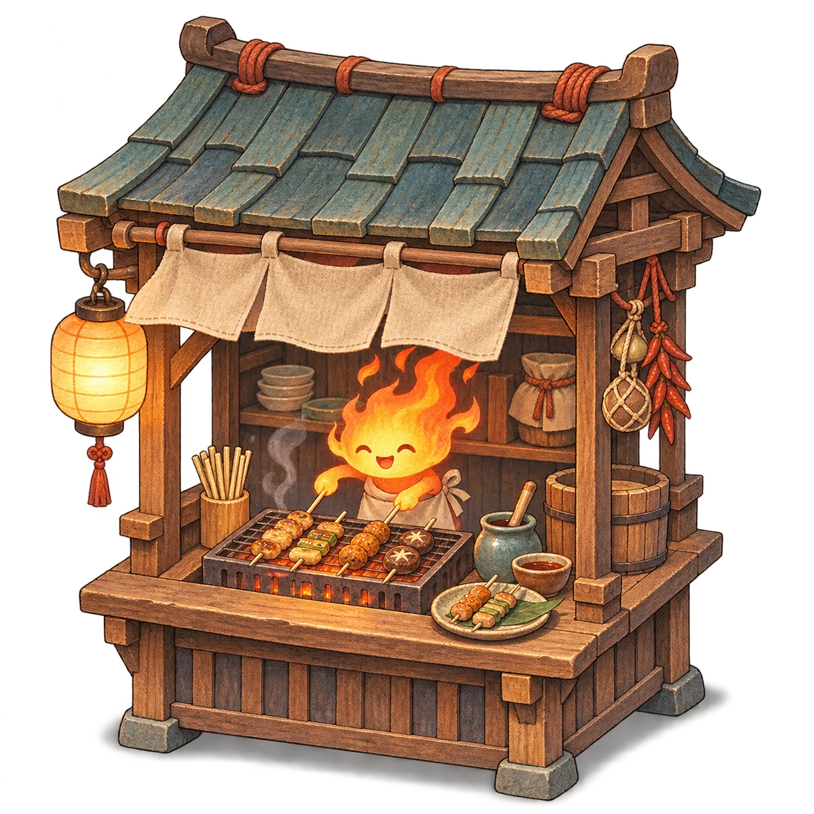

妖怪夜市
灯 火 长 明
音效 ×
?
☰
今夜开市
第一夜
钱袋
88
今夜目标
22
长明灯
● ● ●
☾
晴夜
灯火温柔，所有摊位正常营业。
联动图
沿着灯火，摆一条自己的夜市。
青石巷 · 百鬼町
夜市
☾
灯火将起，百鬼将至。
选择下方妖怪，再点空摊位招募。摊位可拖动，也能交换位置。
升级
收摊
TONIGHT'S VISITORS
今夜，有客来。
换一批
4 铜钱
预计营业额
8
还需 14 铜钱
点灯，开始营业
→
一盏灯，一间铺，一夜百鬼。
玩法说明
THE LANTERN MARKET
妖怪夜市
灯火长明
酒香引客，灯火生财。
将一条小巷，经营成百鬼的归处。

续一盏灯
→
开一条新夜市
竖屏经营 · 自由摆摊 · 十二夜的百鬼故事
原 创 游 戏 · 妖 怪 夜 市
×